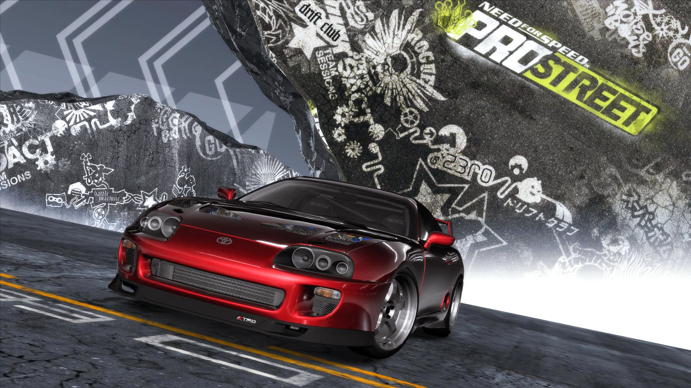
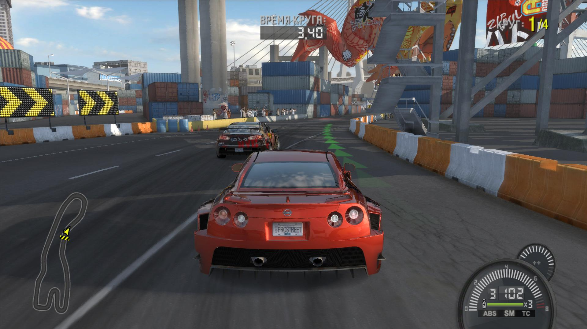
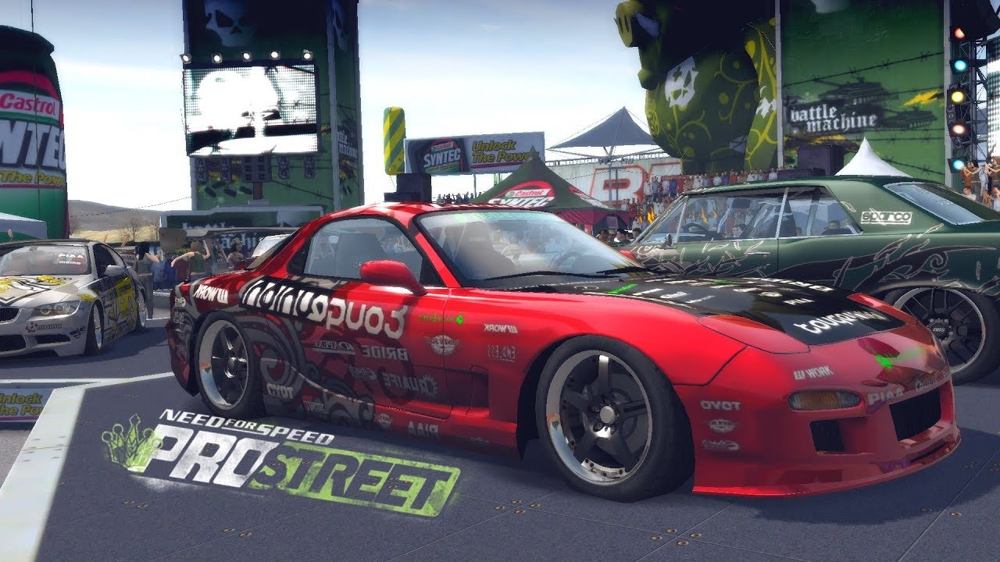
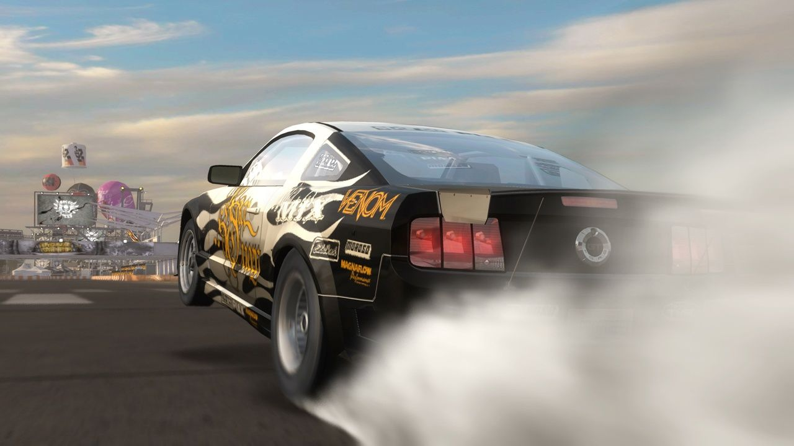

Need for Speed: ProStreet
Need for Speed: ProStreet is a 2007 racing video game developed by EA Black Box and published by Electronic Arts. It is the eleventh installment in the Need for Speed series and a follow-up to Need for Speed: Carbon. Unlike its immediate predecessors, which focused on the contemporary illegal street racing scene, ProStreet focuses on legal circuit races that take place on closed tracks. The game blends elements of both sim and arcade racing games, requiring players to customize and tune cars for various race modes. Most races take place in real-world locations such as the Portland International Raceway, Mondello Park, and Autopolis.
Developed over the course of almost two years, ProStreet was conceived by the same team who led the production of Need for Speed: Most Wanted. It is the first Need for Speed game that was primarily developed for high-definition consoles such as the Xbox 360 and PlayStation 3, although versions for Microsoft Windows, PlayStation 2, and Wii were also released. The game features a new physics engine, which allows cars to handle in a more realistic way and take damage in accidents, and introduced a wind tunnel feature where players can see how their car's aerodynamics work. Musician Junkie XL was hired to compose the score of the game. Several downloadable content packs were released for the game, expanding its content with more cars, tracks, and races.
Developed over the course of almost two years, ProStreet was conceived by the same team who led the production of Need for Speed: Most Wanted. It is the first Need for Speed game that was primarily developed for high-definition consoles such as the Xbox 360 and PlayStation 3, although versions for Microsoft Windows, PlayStation 2, and Wii were also released. The game features a new physics engine, which allows cars to handle in a more realistic way and take damage in accidents, and introduced a wind tunnel feature where players can see how their car's aerodynamics work. Musician Junkie XL was hired to compose the score of the game. Several downloadable content packs were released for the game, expanding its content with more cars, tracks, and races.

Gameplay
Need for Speed: ProStreet is a racing game where the player must tune and drive cars on various race tracks. Although it is not a sim racing game, cars handle in a more realistic way than in previous Need for Speed games. The player assumes the role of Ryan Cooper, a former street racer who enters a series of showdown events run by several racing organizations. Each event comprises a number of races where the player must compete against computer-controlled opponents to earn points and cash. Points allow the player to unlock more challenging events and progress through the game, while cash can be used to purchase or upgrade cars. The overall objective of the game is to ultimately confront a number of elite drivers called Kings. By individually beating every King, Cooper will be crowned the Street King.
The game features four race modes: Grip, Drag, Drift, and Speed. Grip races involve the player racing around a circuit over several laps, where the win condition depends on four variations. These include crossing the finish line in first position or ahead of a class of drivers based on their car performance, recording the best lap time, and recording the best sector times, with each sector representing a section of the circuit. In Drag, the player must be the first to cross a finish line on a short and straight course, changing gears manually. Some also require the player to perform long wheelies. Drag races always start out with a mini-game where the player can gain a good starting grip by heating up car tires while in braked position.
Each car can be highly customized, including their performance, handling, and appearance. Body modifications such as spoilers and hoods affect the car's aerodynamics and can be sculpted accordingly. Cars and aftermarket parts are grouped into four tiers that represent performance levels, which are gradually unlocked as the player progresses through the game. Each car can have a maximum of three blueprints associated with it, with each blueprint representing a different customization.
The game features four race modes: Grip, Drag, Drift, and Speed. Grip races involve the player racing around a circuit over several laps, where the win condition depends on four variations. These include crossing the finish line in first position or ahead of a class of drivers based on their car performance, recording the best lap time, and recording the best sector times, with each sector representing a section of the circuit. In Drag, the player must be the first to cross a finish line on a short and straight course, changing gears manually. Some also require the player to perform long wheelies. Drag races always start out with a mini-game where the player can gain a good starting grip by heating up car tires while in braked position.

Drift races require the player to score points by drifting around bends, while Speed races involve the player maintaining very high speeds on a relatively straight point-to-point course. The win condition of Speed races depends on two variants, which include crossing the finish line in first position or reaching the highest speed at designated checkpoints. Most races take place in real world locations such as Texas World Speedway, Portland International Raceway, Mondello Park, and Autopolis. ProStreet features a large number of cars, ranging from affordable tuner-friendly sedans to exotic cars.Each car can be highly customized, including their performance, handling, and appearance. Body modifications such as spoilers and hoods affect the car's aerodynamics and can be sculpted accordingly. Cars and aftermarket parts are grouped into four tiers that represent performance levels, which are gradually unlocked as the player progresses through the game. Each car can have a maximum of three blueprints associated with it, with each blueprint representing a different customization.

Development
Need for Speed: ProStreet is a 2007 racing video game developed by EA Black Box and published by Electronic Arts. It is the eleventh installment in the Need for Speed series and a follow-up to Need for Speed: Carbon. Unlike its immediate predecessors, which focused on the contemporary illegal street racing scene, ProStreet focuses on legal circuit races that take place on closed tracks. The game blends elements of both sim and arcade racing games, requiring players to customize and tune cars for various race modes. Most races take place in real-world locations such as the Portland International Raceway, Mondello Park, and Autopolis.
Developed over the course of almost two years, ProStreet was conceived by the same team who led the production of Need for Speed: Most Wanted. It is the first Need for Speed game that was primarily developed for high-definition consoles such as the Xbox 360 and PlayStation 3, although versions for Microsoft Windows, PlayStation 2, and Wii were also released. The game features a new physics engine, which allows cars to handle in a more realistic way and take damage in accidents, and introduced a wind tunnel feature where players can see how their car's aerodynamics work. Musician Junkie XL was hired to compose the score of the game. Several downloadable content packs were released for the game, expanding its content with more cars, tracks, and races.
Developed over the course of almost two years, ProStreet was conceived by the same team who led the production of Need for Speed: Most Wanted. It is the first Need for Speed game that was primarily developed for high-definition consoles such as the Xbox 360 and PlayStation 3, although versions for Microsoft Windows, PlayStation 2, and Wii were also released. The game features a new physics engine, which allows cars to handle in a more realistic way and take damage in accidents, and introduced a wind tunnel feature where players can see how their car's aerodynamics work. Musician Junkie XL was hired to compose the score of the game. Several downloadable content packs were released for the game, expanding its content with more cars, tracks, and races.
Gameplay trailer